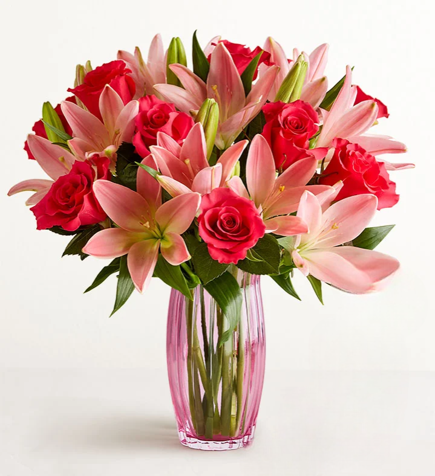
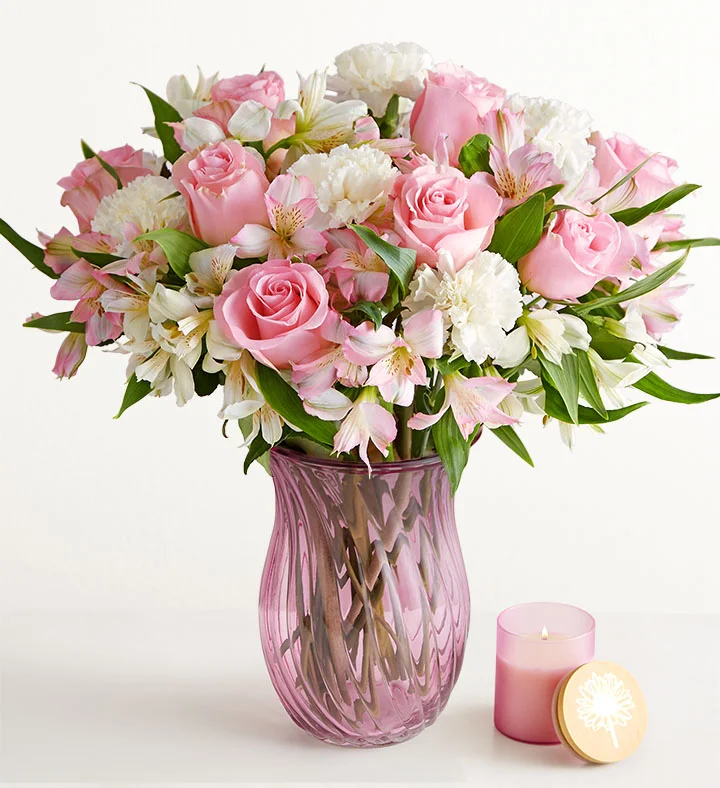
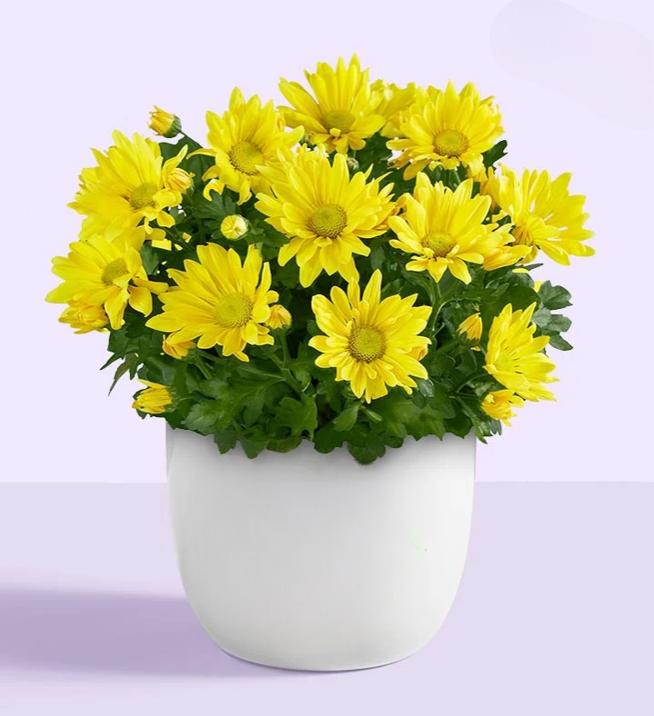
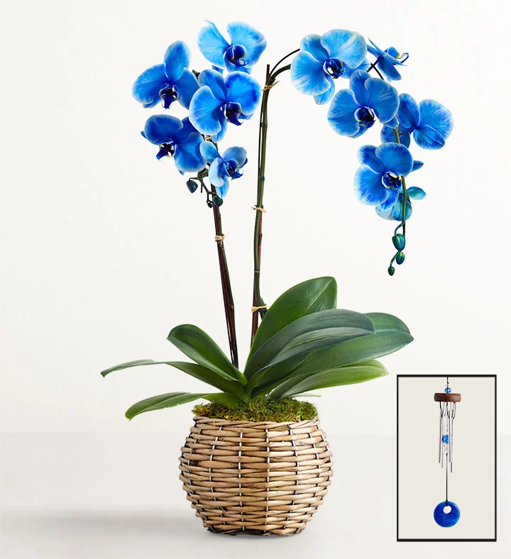

|

Rose & Lily
Bouquet
₱190
A rose and lily bouquet pairs love and grace
— with roses for passion
and lilies for purity. A vibrant choice for romantic or heartfelt occasions.
|
|
|

Carnation Bouquet
₱160
The Carnation Bouquet, with its ruffled petals, symbolizes love and admiration
— perfect for birthdays or heartfelt moments.
|
|
|

Daisy
₱190
The Daisy symbolizes innocence, joy, and new beginnings
— a bright bloom perfect for uplifting spirits or marking fresh starts.
|
|
|

Blue Phalaenopsis
Orchid
₱170
The Blue Phalaenopsis Orchid, with its vivid hue and elegant arching stems, symbolizes rarity, strength, and serenity
— ideal for refined gifts or peaceful décor.
|
|
|